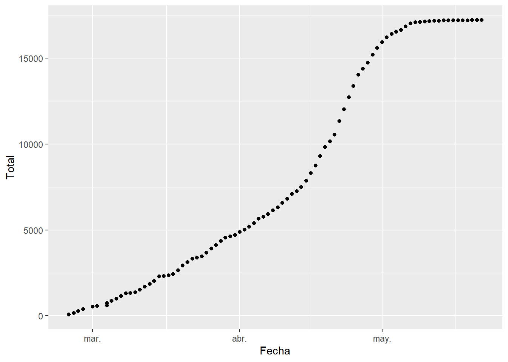
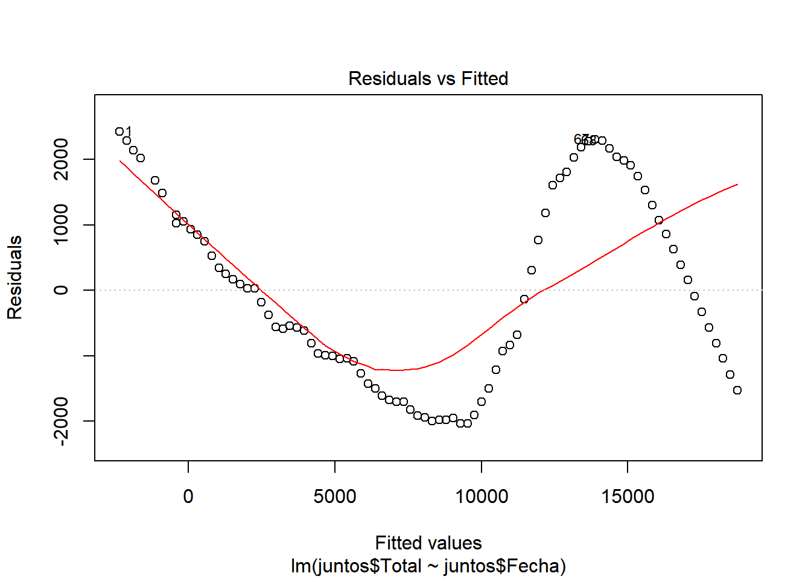
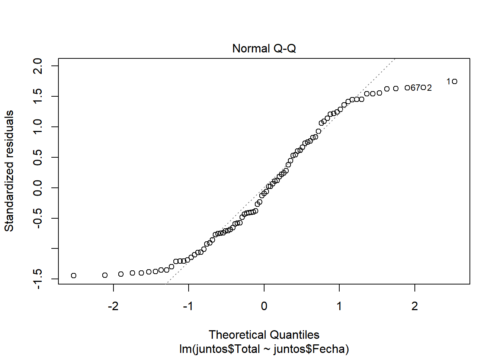
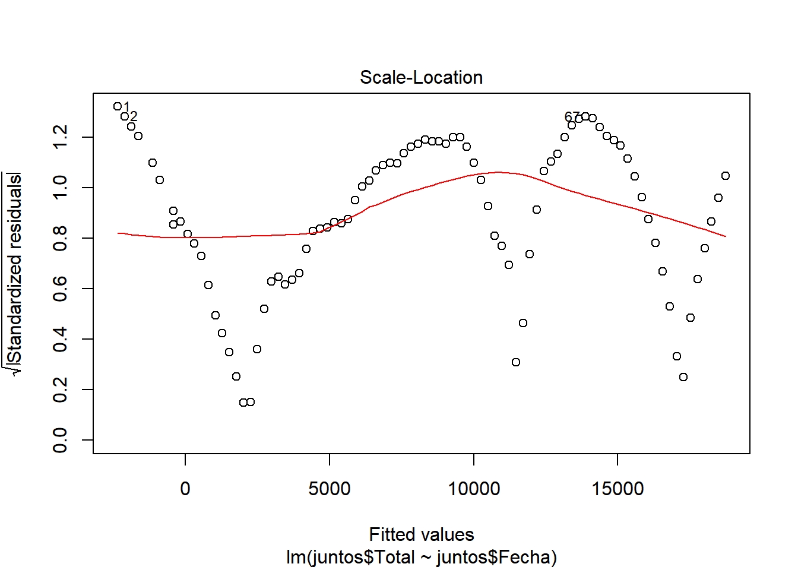
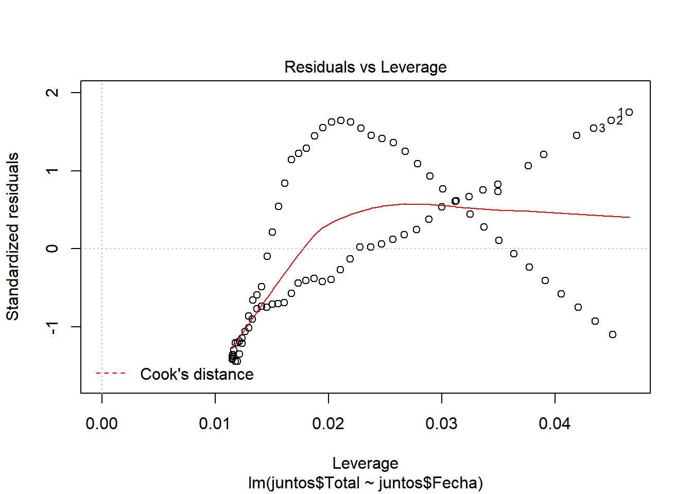
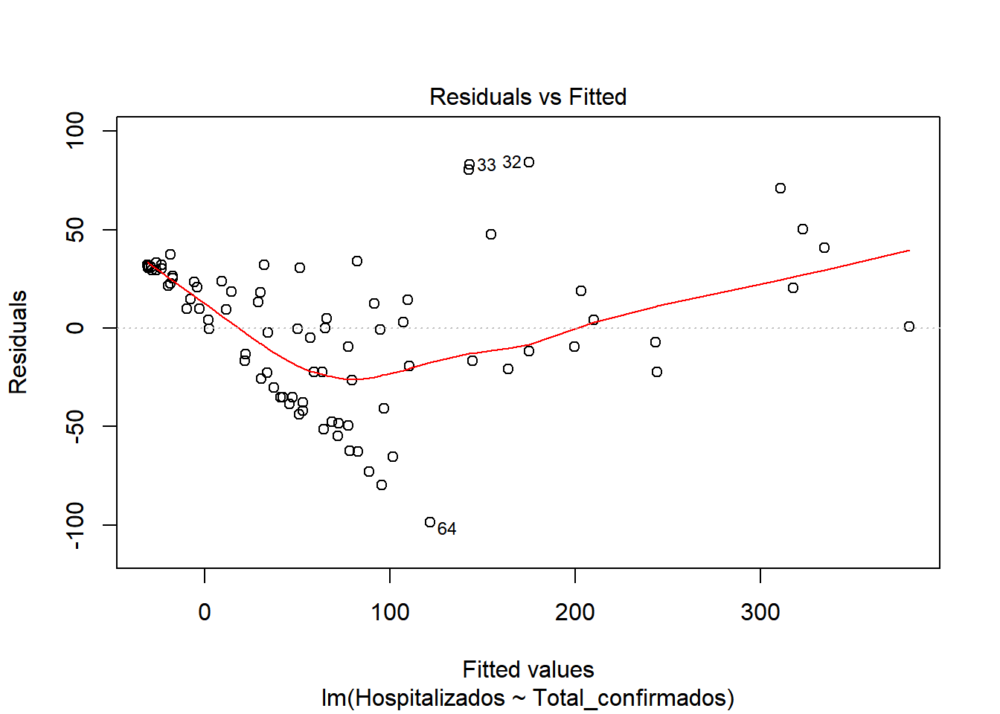
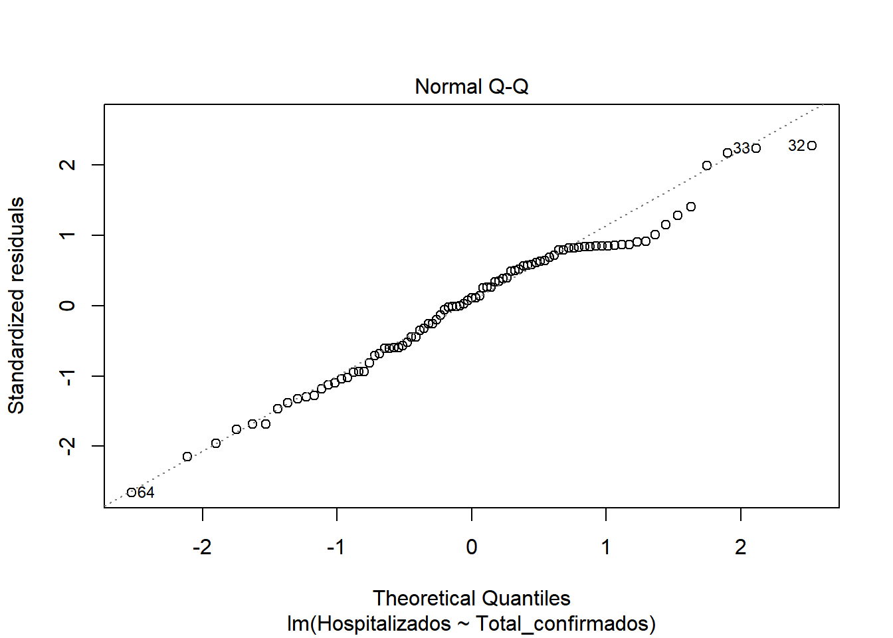
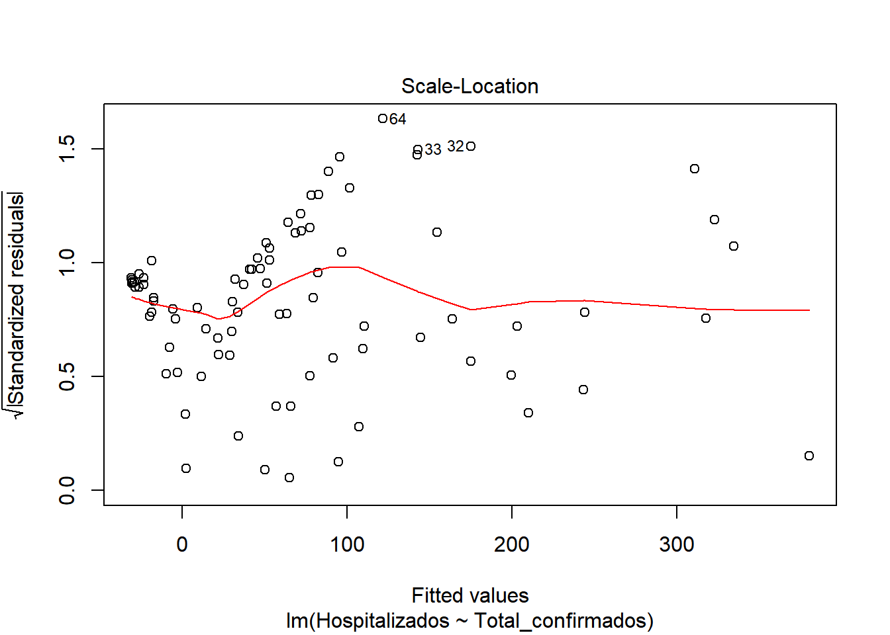
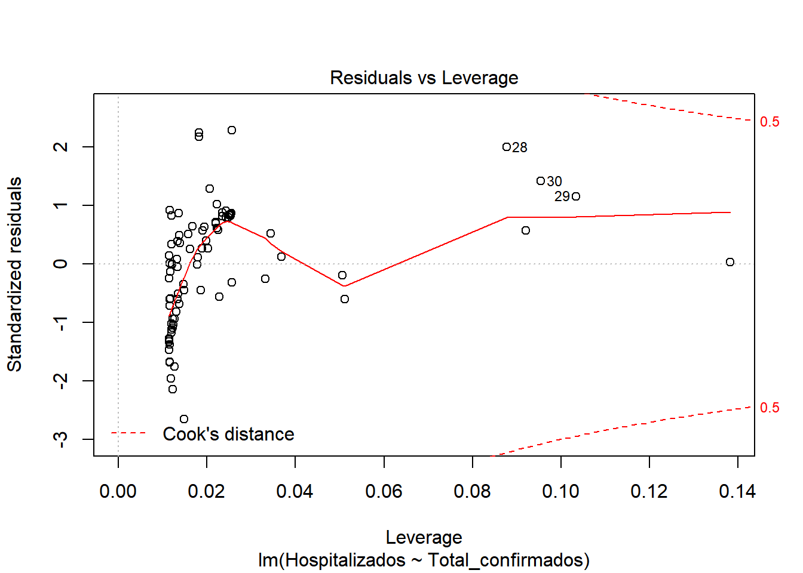
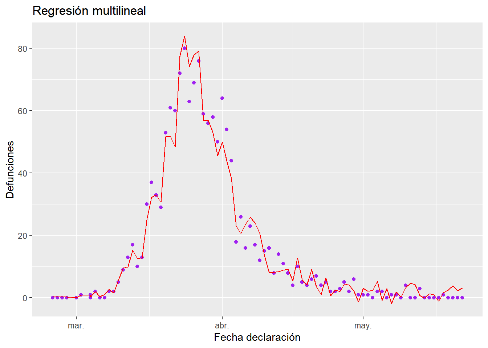

4 Regression
We process the dataset to be able to work with it.
colnames(cs) <- c("Fecha", "Territorio", "Confirmados_PCR", "Hospitalizados", "UCI", "Curados", "Defunciones", "Total_confirmados")
juntos <-
filter(cs, cs$Territorio == "Andalucía")
juntos <- mutate(juntos, Total = cumsum(Total_confirmados))
c <- juntos$Curados
h <- juntos$Hospitalizados
d <- juntos$Defunciones
uci <- juntos$UCI
conf <- juntos$Confirmados_PCR
totalconf <- juntos$Total_confirmados
salidac <- vector("numeric",length(c))
salidah <-vector("numeric",length(h))
salidad <- vector("numeric",length(d))
salidauci <- vector("numeric",length(uci))
salidaconf <- vector("numeric",length(conf))
salidatotalconf <- vector("numeric",length(totalconf))
for(i in seq_along(c)){
salidac[length(c)+1-i] <- c[i]
salidah[length(h)+1-i] <- h[i]
salidad[length(d)+1-i] <- d[i]
salidauci[length(uci)+1-i] <- uci[i]
salidaconf[length(conf)+1-i] <- conf[i]
salidatotalconf[length(totalconf)+1-i] <- totalconf[i]
}
juntos$Curados <- salidac
juntos$Hospitalizados <- salidah
juntos$Defunciones <- salidad
juntos$UCI <- salidauci
juntos$Confirmados_PCR <- salidaconf
juntos$Total_confirmados <- salidatotalconf
fechas <- as.Date(juntos$Fecha ,"%d/%m/%Y")
juntos$Fecha <- sort(fechas) We make the graph of how the cases have increased as a function of time.

In this graph we can see how the number of cases up to May increased exponentially. However, starting from this date, the number of cases per day begins to decrease, reaching the famous peak.
4.1 Model of the number of infections with respect to the date
##
## Call:
## lm(formula = juntos$Total ~ juntos$Fecha, data = juntos)
##
## Coefficients:
## (Intercept) juntos$Fecha
## -4444803.2 242.5##
## Call:
## lm(formula = juntos$Total ~ juntos$Fecha, data = juntos)
##
## Residuals:
## Min 1Q Median 3Q Max
## -2038.5 -1147.8 -133.7 1165.0 2423.5
##
## Coefficients:
## Estimate Std. Error t value Pr(>|t|)
## (Intercept) -4.445e+06 1.110e+05 -40.03 <2e-16 ***
## juntos$Fecha 2.425e+02 6.047e+00 40.11 <2e-16 ***
## ---
## Signif. codes: 0 '***' 0.001 '**' 0.01 '*' 0.05 '.' 0.1 ' ' 1
##
## Residual standard error: 1420 on 85 degrees of freedom
## Multiple R-squared: 0.9498, Adjusted R-squared: 0.9492
## F-statistic: 1609 on 1 and 85 DF, p-value: < 2.2e-16We start by checking if there is a model, for this we look at the values of F-statistic and p-value. ** F-statistic ** is quite far from 1 (1609), so it indicates that there is a model. ** P-value **, is well below 0.005, confirming that there is a model (H1 is met) Now that we know there is a model, let’s study how good our model is.
We look at \(R^2\), which has a value of 0.9498, a pretty good value, since 94.98% of the cases are collected with this model. We also see that there is almost no difference between adjusted \(R^2\) and \(R^2\), so there is no overfitting in our model and that the values are relevant (indicated by ***) Let’s continue studying the model, for this we will see the graphs of the adjusted values and residuals.

In these graphs we can see how it begins adjusting to the values. However, as cases increase, there is more waste. This may be due to the results of the contingency measures that were taken. With all this we could say that we have a pretty good model. ## Model of the number of people who were hospitalized with respect to the number of infected.
##
## Call:
## lm(formula = Hospitalizados ~ Total_confirmados, data = juntos)
##
## Coefficients:
## (Intercept) Total_confirmados
## -31.5285 0.5212##
## Call:
## lm(formula = Hospitalizados ~ Total_confirmados, data = juntos)
##
## Residuals:
## Min 1Q Median 3Q Max
## -98.696 -24.055 4.173 29.359 84.144
##
## Coefficients:
## Estimate Std. Error t value Pr(>|t|)
## (Intercept) -31.52846 5.98438 -5.268 1.02e-06 ***
## Total_confirmados 0.52117 0.02246 23.200 < 2e-16 ***
## ---
## Signif. codes: 0 '***' 0.001 '**' 0.01 '*' 0.05 '.' 0.1 ' ' 1
##
## Residual standard error: 37.37 on 85 degrees of freedom
## Multiple R-squared: 0.8636, Adjusted R-squared: 0.862
## F-statistic: 538.3 on 1 and 85 DF, p-value: < 2.2e-16We start by checking if there is a model, for this we look at the values of F-statistic and p-value. F-statistic is quite far from 1 (538), so it indicates that there is a model. P-value, is well below 0.005, which confirms that there is a model (H1 is met) Now that we know there is a model, let’s study how good our model is. We look at \(R^2\), which has a value of 0.8636, a pretty good value, since 86.36% of hospitalization cases are included in this model. We also see that there is almost no difference between adjusted \(R^2\) and \(R^2\), so there is no overfitting in our model and that the values are relevant (indicated by ***) Let’s continue studying the model, for this we will see the graphs of the adjusted values and residuals.

In the graphs we can see how there is dispersion of the values, and how it fits better at the beginning than at the end. We also observed that at the beginning of the period the number of hospitalized was very close to the number of cases. But as time progresses, the number of cases increases considerably, but not so much the number of hospitalized. This may be due to the fact that the population was informed of the first symptoms and the measures they had to take, so that an infected person could be detected in the early stages and monitored so that the severity could be reduced.
library(readxl)
library(tidyverse)
datos <- read_excel("cs_export.xls")
datos <- na.omit(datos)
names(datos) <- c(names(datos[1:2]),"Confirmados_PCR",names(datos[4:7]),"Total_confirmados")
varPred <- names(datos[c(3:6,8)])
datos$`Fecha declaración` <- as.Date(datos$`Fecha declaración`, "%d/%m/%Y")
datos <- arrange(datos, `Fecha declaración`)
filasandalucia <- filter(datos, Territorio=="Andalucía" )We are going to produce a multivariate regression model that explains the variable Defunction using an iterative technique in which we will add each time the variable whose R-adjusted is greater.
We define a function to calculate the linear model of a sum of variables
linearAdjust <- function(df, y, x){
mod1 <- lm(str_c(y,"~",str_c(x,collapse="+")),df)
}
calcModR2 <- function(df,y,x){
mod <- linearAdjust(df,y,x)
summary(mod)$adj.r.squared
}We are adding variables while increasing the value of adjusted \(R^2\).
encontrarMejorAjuste <- function(df,varPos){
bestVars <- character(0)
aR2 <- 0
repeat{
aR2v <- map_dbl(varPos,~calcModR2(df, "Defunciones",c(bestVars,.)))
i <- which.max(aR2v)
aR2M <- aR2v[i]
if(aR2M<=aR2 ||length(varPos)<1) break
#Valor del r-ajustado añadido y nombre de la variable elegida
cat(sprintf("%1.4f %s\n",aR2M,varPos[i]))
aR2 <- aR2M
bestVars <- c(bestVars,varPos[i])
varPos <- varPos[-i]
}
mod <- linearAdjust(df,"Defunciones",bestVars)
list(vars=bestVars,mod=mod)
}
bestMod <- encontrarMejorAjuste(filasandalucia, varPred)## 0.9499 Hospitalizados
## 0.9521 UCI
## 0.9530 Curados
## 0.9566 Total_confirmados
## 0.9642 Confirmados_PCR## $vars
## [1] "Hospitalizados" "UCI" "Curados"
## [4] "Total_confirmados" "Confirmados_PCR"
##
## $mod
##
## Call:
## lm(formula = str_c(y, "~", str_c(x, collapse = "+")), data = df)
##
## Coefficients:
## (Intercept) Hospitalizados UCI Curados
## 0.26562 0.11219 0.35878 -0.21053
## Total_confirmados Confirmados_PCR
## 0.10853 0.08473##
## Call:
## lm(formula = str_c(y, "~", str_c(x, collapse = "+")), data = df)
##
## Residuals:
## Min 1Q Median 3Q Max
## -11.2602 -2.2208 -0.3433 1.8867 13.9259
##
## Coefficients:
## Estimate Std. Error t value Pr(>|t|)
## (Intercept) 0.26562 0.82376 0.322 0.747941
## Hospitalizados 0.11219 0.03151 3.561 0.000623 ***
## UCI 0.35878 0.10317 3.478 0.000816 ***
## Curados -0.21053 0.03937 -5.347 8.07e-07 ***
## Total_confirmados 0.10853 0.02412 4.499 2.26e-05 ***
## Confirmados_PCR 0.08473 0.01978 4.284 5.02e-05 ***
## ---
## Signif. codes: 0 '***' 0.001 '**' 0.01 '*' 0.05 '.' 0.1 ' ' 1
##
## Residual standard error: 4.285 on 81 degrees of freedom
## Multiple R-squared: 0.9663, Adjusted R-squared: 0.9642
## F-statistic: 463.9 on 5 and 81 DF, p-value: < 2.2e-16The model obtained would be of the form:
\[ Defunciones=0.2656235 +0.1121855·Hospitalizados+0.3587845·UCI+-0.2105297·ConfirmadosPCR+0.1085301·Curados+0.0847283·TotalConfirmados \]
Finally we can represent the graph of the data (purple) with the regression obtained superimposed (red)
g <- ggplot(filasandalucia, aes(x=`Fecha declaración`,y=Defunciones))+
ggtitle("Regresión multilineal")+
geom_point(colour="purple")+
geom_line(aes(`Fecha declaración`, predict.lm(bestMod$mod)), color="red")
g